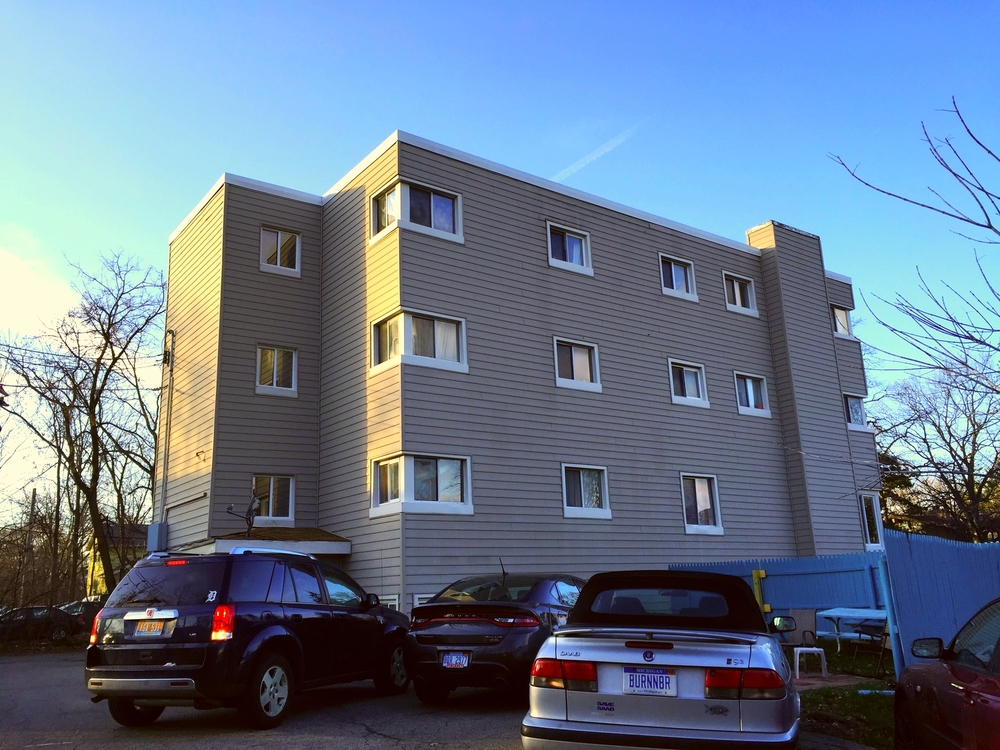

Daily Journal
09/23/2025 1:44 PM
Pope, Angie
I woke up this morning at about 7:30 AM before I realized I set my alarm a
bit to early. After sleeping for another hour I got up and showered. I then
picked out what I wanted to wear and backed my bag, leaving for my 30 minute
walk to the CommArtSci building for MI 420, Interacting Prototyping. On
the way I saw some geese! We were discussing some design principles to help
us with our 3D printing project, but I was focused on some personal business on
my laptop regarding getting some people moved into my co-op next fall. After I
got out of that class, I walked in the heavily pouring rain to my next class in
the Business Complex, MI 349, Web Design and Development at 12:40 PM. Right now
I am currently working on learning how to properly format HTML to current web
standards. When I get home my housemate is taking me to the store to get stuff
to fix both my bike and my car since they are both broken down, as well as stuff
to make dinner for my house. After that, I'll work on some homework, probably
play games for a bit, mentally prepare for work tomorrow and go to bed.

New Spring Members!
09/21/2025 11:19 AM
Pope, Angie
This morning I've begun to work on organizing tours for new members moving in
during the spring semester in Elsworth co-op house. In order to move into Elsworth,
new members must attend a tour, a house dinner and a house meeting. I am the membership
office of Elseworth House, so I am in charge of facilitating and organizing
this process! Below is a table for new members moving in for the spring.
| Touree |
Pronouns |
Have they been given a toured? |
Have they attended a dinner? |
Have they attended a meeting? |
Are they ready to sign? |
| Dimitri Jacobs |
They/He |
No |
Yes |
Yes |
No |
| Alex Hymn |
She/Her |
Yes |
Yes |
No |
No |
| Feris Lockmore |
He/Him |
Yes |
Yes |
Yes |
Yes |
Below is a picture of our house...

This house has 21 single rooms and is mostly filled up with college students,
however we do have some members who dont go to MSU. The house as we know it was rebuilt
and opened in 1951. We have house meals Sunday nights through Thursday nights, which
are cooked by members of the house who volunteer to cook as a chore. Everyone has
to pull their weight around the house, be it cooking, cleaning, yard work, or leadership
roles like mine! If you are interested, please contact me!